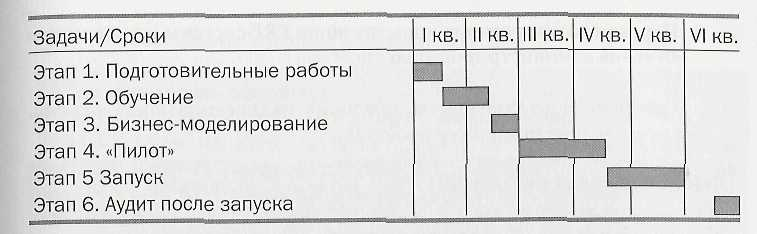

Данная методология может быть рекомендована сравнительно крупным (более 500 человек) предприятиям или предприятиям со сложной структурой и большим количеством операций. Этот подход также оправдан для одновременного внедрения на многих производственных площадках (в холдинговых структурах), на предприятиях, способных сформировать полноценные группу проекта и координационный комитет. Очень хорошо классическая методология подходит предприятиям старой формации, уходящим от советских методов управления, предприятиям, предпочитающим постепенный, эволюционный метод проведения преобразований и не располагающим высококвалифицированным персоналом для быстрого начала применения современных методов управления.
Примерный график осуществления проекта с указанием некоторых задач к выполнению представлен ниже.
 |
Ниже предлагается последовательность действий по реализации указанного выше плана внедрения. Отметим, что все перечисленные ниже требования должны быть выполнены. В рамке приведено описание результата каждого этапа. Именно этот результат должен быть достигнут и проконтролирован руководителем/директором проекта.
Общей целью подготовительных работ является создание условий для последующего развития проекта. Именно здесь закладывается основа успеха как дальнейших шагов, так и проекта в целом. В рамках этого этапа фазы выполняются подготовительные работы, необходимые для обеспечения процесса внедрения, а именно:
Задачи:
Ответственные: Руководство предприятия, внешние консультанты, обеспечивающие поддержку проекта.
Контролируемыи результат:
Целью обучения является формирование у каждого члена проектной группы базовых навыков работы и понимания функциональности системы, достаточных для ее дальнейшего освоения.
Под базовым обучением подразумевается набор стандартных учебных курсов, предоставляемых разработчиком ERP-системы или консалтинговой компанией. По необходимости, помимо базового обучения, может быть проведено дополнительное обучение по более узкой тематике, например:
Задачи:
Ответственные: внешние консультанты.
Контролируемый результат.
Проведено обучение. Члены группы внедрения, присутствовавшие на обучении, усвоили
материал, что проверяется прохождением тестов каждым сотрудником. Тестирование,
как правило, проводится в последний день руководителем проекта или внешним консультантом,
что предпочтительнее. Примечание. В случае необходимости проводится дополнительное
обучение.
На этих этапах (для некоторых проектов они могут быть объединены) проводится разработка, моделирование и тестирование выбранных бизнес-процессов на реальных данных предприятия с использованием ERP-системы. Фактически в ходе этого этапа проводится моделирование работы предприятия с системой. Результатом выполнения этапа служит рабочая модель предприятия. При этом не все бизнес-процессы могут быть смоделированы, но все они должны быть определены. Для упрощения процесса тестирования в систему вводится информация об ограниченном наборе спецификаций, подразделений, рабочих центров и т.п. После выполнения тестирования на ограниченном примере модель усложняется, т.е. берутся изделия с большей номенклатурой позиций и с более сложной спецификацией. Также на этой фазе группа внедрения поводит документирование всех бизнес-процессов, подлежащих автоматизации в рамках данного этапа. Документирование может проводиться в формате процедур, соответствующих ISO-9000. При этом могут сразу же разрабатываться рабочие инструкции для конечных пользователей.
Также в ходе «Пилота» определяются требования к интерфейсам по обмену информацией с существующими системами (если после запуска планируется использовать последние) и необходимым модификациям программного обеспечения. Разработка и тестирование модификаций и интерфейсов может выполняться как в ходе "Пилота", так и на других фазах проекта, а также по отдельному план).
Итогом является документ, описывающий начальные данные, протестированные функции и полученные результаты. Также в документе должны быть представлены открытые вопросы. Указанный документ составляется группой внедрения предприятия, представляется и утверждается на координационном комитете.
Задача. Построение модели работы предприятия с использованием системы, определение методов управления. Тестирование системы группой внедрения.
Ответственные: Группа внедрения, внешние консультанты (опционально).
Контролируемый результат:
Описанная и протестированная модель функционирования предприятия {в рамках запускаемых
функций). Формат описания модели предприятия должен включать в себя формы документов
и описания процедур.
Примечание. В случае затягивания сроков модель предприятия тем не менее должна
быть составлена, но с указанием неразрешенных вопросов. После решения вопросов
(через изменение бизнес-процессов или
модификацию системы) моделирование работы системы должно быть завершено.
В ходе данной фазы проекта осуществляется распределение и конфигурирование рабочих мест, обучение конечных пользователей, ввод в систему основных справочников и словарей. На этом же этапе может проводиться дополнительное тестирование (тестирование интерфейсов, например) или может быть уже начата работа в «живой» системе для некоторых функций. Практика внедрений свидетельствует о том, что некоторые модули стандартных ERP-систем при надлежащем под¬ходе к тестированию членов группы внедрения могут быть подготовлены к запуску и запущены уже на этапе «Пилот». Как правило, это модули Закупки, Продажи. Отметим, что без запуска этих функций, а также функций управления запасами запуск функций планирования и управления производством не принесет желаемых результатов (если вообще будет возможен). Поэтому при помодульном запуске такая последовательность действий оправданна.
Задачи:
Ответственные: Группа внедрения, внешние консультанты (опционально).
Контролируемый результат:
Хотя многие предприятия после запуска «умывают руки», все же крайне рекомендуется проводить через месяц-два работы системы в режиме реального времени специальное обследование. Как правило, здесь оправданно привлечение внешних консультантов при участии членов проектной группы предприятия. По результатам обследования составляется отчет, в котором производится сравнение эффективности работы подразделений до и после внедрения, а также разрабатываются рекомендации по дальнейшему повышению достигнутой эффективности.